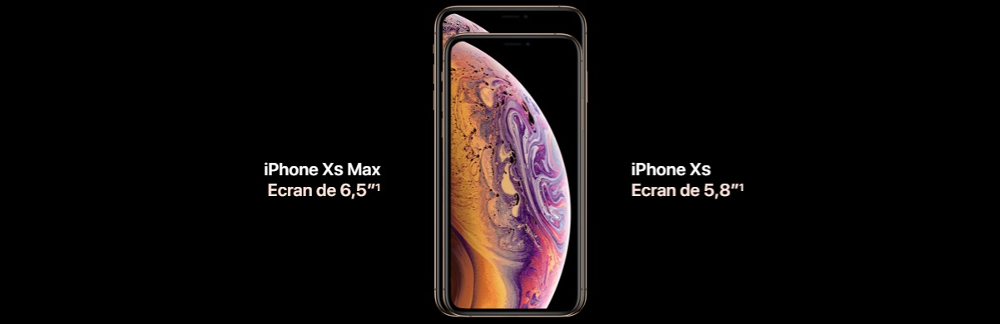
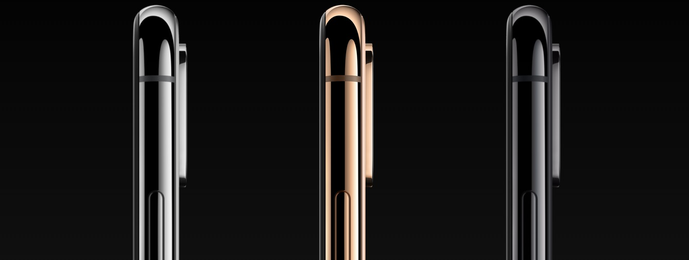
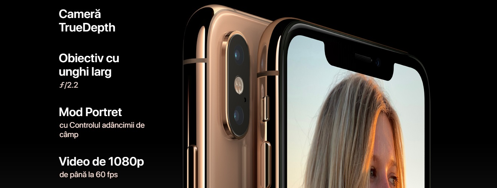

|
Super Retina în două dimensiuni - inclusiv cel mai mare ecran văzut vreodată la un iPhone. Face ID și mai rapid. Cel mai inteligent și mai puternic cip întâlnit la un smartphone. Și un sistem revoluționar de camere duale. iPhone XS reprezintă tot ceea ce iubești la iPhone. Acum, la un nivel extrem. Ecranele OLED personalizate de pe iPhone XS oferă cele mai clare culori întâlnite în industrie, HDR și negru autentic. Iar iPhone XS Max are cel mai mare ecran văzut vreodată pe un iPhone. 
Materiale excepționale. Cea mai rezistentă sticlă folosită vreodată la un smartphone. O nouă culoare de finisaj aurie superbă, realizată printr-un proces la nivel atomic. Benzi-contur de mare precizie, din oțel inoxidabil chirurgical. Și un nou nivel de rezistență la apă și praf. Oțel inoxidabil chirurgical. Folosim un aliaj conceput special de Apple, care este prelucrat cu precizie pentru a crea benzi-contur structurale în trei finisaje. Încărcare wireless. Spatele din sticlă permite ca dispozitivul iPhone XS să poată fi încărcat wireless. Și se încarcă mai rapid chiar și decât iPhone X. Proces PVD de aplicare a culorii. Finisajele de culoare aurie și gri stelar sunt obținute în urma unui proces avansat de depunere fizică prin vapori pe benzile-contur din oțel inoxidabil pentru culori și grad de reflexie care se potrivesc perfect cu sticla. 
Face ID Avansat. Securitatea e mult simplificată când fața ta devine parola ta. Îți poți debloca iPhone-ul și te poți autentifica în aplicații, conturi și multe altele, dintr-o privire. Este cea mai sigură autentificare facială văzută vreodată la un smartphone. Iar acum e și mai rapidă. Cip inteligent A12 Bionic. Acesta este cel mai puternic și mai inteligent cip care a intrat vreodată în construcția unui smartphone, împreună cu procesorul nostru Neural Engine de ultimă generație. Pentru experiențe uimitoare de realitate augmentată. Portrete incredibile cu Controlul adâncimii de câmp. Plus viteză și fluiditate în tot ceea ce faci. Sistem revoluționar de camere duale. Cea mai populară cameră din lume tocmai deschide o nouă eră în fotografie. Totul se întâmplă printr-un senzor inovator care lucrează împreună cu ISP și cu Neural Engine pentru a te ajuta să creezi fotografii cum nu s-au mai văzut. 
Și încă ceva. iPhone XS oferă 4G LTE Advanced pentru viteze de descărcare incredibil de rapide.5 Și spațiu de stocare de până la 512 GB, reprezentând cea mai mare capacitate iPhone de până acum. Niciun alt telefon nu se compară cu iPhone. Fiecare decizie luată în conceperea iPhone-ului, îl face să se evidențieze în fața tuturor. De la cum este fabricat, la modul în care am încorporat confidențialitatea și securitatea încă de la început, la modurile inovatoare în care reciclăm componentele sale. |